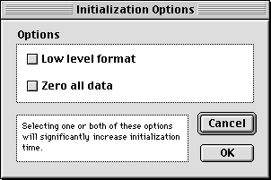

Movable Modal Dialog Boxes
A movable modal dialog box is a modal dialog box with a title bar which allows the user to move the dialog box. The user can also switch to other applications without closing the dialog box. These enhancements makes the movable modal dialog box preferable to the modal dialog box (page 56) in most situations.A movable modal dialog box does not have a close box or a zoom box. This design gives the user visual feedback that the dialog box can be moved, but is modal and must be responded to before completing any other action in the active application. A title is preferred but is not required. Figure 3-2 shows a movable modal dialog box.
Figure 3-2 A movable modal dialog box

For more information on the behavior of movable modal dialog boxes, see "Movable Modal Dialog Box Behaviors" in Macintosh Human Interface Guidelines.